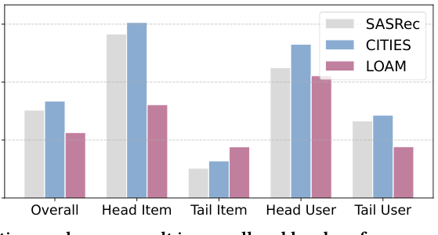
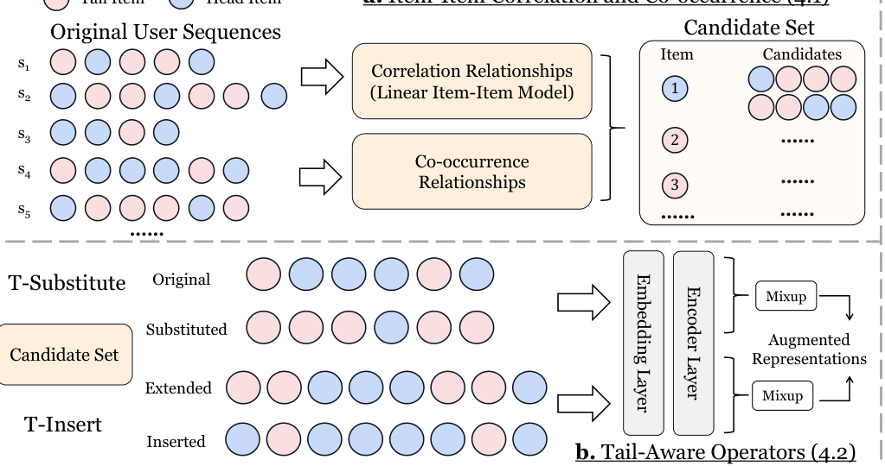

Tail-Aware Data Augmentation for Long-Tail Sequential Recommendation (面向长尾序列推荐的尾部感知数据增强)
- 会议/期刊: WWW 2026
- 作者与机构: Yizhou Dang, Zhifu Wei, Minhan Huang, Lianbo Ma, Jianzhe Zhao, Guibing Guo, Xingwei Wang（东北大学）
- 推荐链路定位: 召回（序列下一项预测）
- 研究方向: 冷启动与长尾推荐 / 序列推荐
- 论文原文: https://arxiv.org/abs/2601.10933v1
- 开源代码: https://github.com/KingGugu/TADA
TL;DR (1分钟核心速览)
长尾序列推荐的两大痛点：现有知识迁移方法（CITIES/LOAM/MELT）无法真正提升尾部物品/用户的交互频次，且改善尾部时往往牺牲整体与头部性能（跷跷板效应）。TADA 从数据视角破局：用岭回归线性物品相似度模型预构建候选集，设计 T-Substitute（头部换尾部）与 T-Insert（尾部前插相关项）两个尾部感知算子，并在表征层与原始序列 Mixup，再跨序列做尾部感知交叉增强。在 Toys/Beauty/Sports 三数据集、Leave-One-Out + Full-Ranking 协议下，以 GRU4Rec/SASRec/FMLP-Rec 为骨干，整体 H@10 相对最强基线提升约 5%–20%，尾部用户/物品提升更显著，且头部不降。
Background & Motivation (背景与核心矛盾)
- 主流范式: 长尾 SR 主流走知识迁移路线——CITIES 用头部上下文推断尾部物品嵌入，MELT 双分支互增强，LOAM 在会话推荐中迁移头部知识；数据增强路线（CMR/CMRSI/RepPad）则用 Crop/Mask/Reorder/Insert/Substitute 等启发式算子扰动序列。
- 前人局限: ① 交互稀疏未根治：迁移只"借"头部表征，不增加尾部交互次数；ASReP 生成的伪先验项多为头部物品，对尾部物品稀疏性无改善。② 跷跷板效应：图 1(b) 显示 LOAM 提升尾部的同时整体与头部 H@10 明显下滑，损害整体体验。
- 核心洞察 (Key Insight): SR 中物品嵌入是主要可学习参数、用户表征隐式蕴含于序列输出，因此物品交互次数直接决定嵌入收敛质量；要救尾部，必须从数据层面真正"造出"尾部交互，而非仅迁移表征。
- 本文切入点: 用预构建的线性相似度候选集 + 两个定向作用于尾部的增强算子 + 表征层 Mixup，在增加尾部频次的同时用原始序列语义"锚住"头部性能。

Method (核心方法设计)
1. 整体框架 (Overall Architecture)
TADA 分三阶段闭环：(a) 候选集构建——在训练前用线性物品-物品模型一次性解出相似度矩阵 \(\hat{M}_S\)，并结合一阶共现关系为每个物品构造候选集\(c_v\)；(b) 尾部感知算子——按序列长度自适应选择 T-Substitute（把头部物品替换为相关尾部候选）或 T-Insert（在尾部物品前插入相关候选并复制扩展原序列），增强序列与原序列在编码器输出表征层做 Mixup；(c) 交叉增强——按尾部物品占比\(\beta\) 将 batch 内序列分为"头部偏好/尾部偏好"两组，组内 shuffle 后再次 Mixup，正负样本同步混合。训练采用两阶段策略：第一阶段仅用原始数据 BCE 预热嵌入，第二阶段叠加三项损失联合优化。
flowchart TD
A["用户交互序列 s_u"] --> B["线性物品相似度 + 一阶共现 候选集 c_v"]
B --> C["T-Substitute / T-Insert 按长度自适应选择"]
C --> D["编码器输出表征层 Mixup"]
D --> E["尾部感知交叉增强 (组内 shuffle + Mixup)"]
E --> F["BCE 下一项预测"]
2. 关键设计拆解 (Key Designs)
-
线性物品相似度候选集（替代 \(O(|V|^2)\) 余弦检索）：痛点在于传统增强每次筛选都要在线算余弦相似度，复杂度高且对冷门物品共现刻画弱。TADA 预解岭回归式： $\(\hat{M}_S=\arg\min_{M_S}\|M_D-M_D M_S\|_F^2+\lambda\|M_S\|_F^2,\ \text{s.t.}\ \mathrm{diag}(M_S)\le\xi\)$ 闭式解 \(\hat{M}_S=I-P\cdot\mathrm{diagMat}(\gamma)\)，\(P=(M_D^\top M_D+\lambda M_D)^{-1}\)。线性模型对低流行度物品的共现更敏感，且训练前一次算完，增强阶段零相似度开销。再并上一阶共现集\(c_v=c^r_v\cup c^c_v\)（头部物品取前后邻、尾部物品取前驱），补足位置信息。
-
T-Substitute / T-Insert 双算子 + 长度自适应调度：传统算子随机选位置选物品，打不到尾部。T-Substitute 以概率 \(p\)选中序列中头部物品并替换为候选集中的相关项；T-Insert 以概率\(p\)选中尾部物品并在其前插入候选，同时复制该位置物品扩展原序列保证等长（式 10）。关键细节：\(p\sim\mathrm{Uniform}(a,b)\)而非固定值，提供更多样增强样本；算子选择按\(p_{insert}=1-|s_u|/N\) 分配，短序列（尾部用户）更倾向插入以快速提频。
-
表征层 Mixup 与尾部感知交叉增强 + 训练目标：增强序列不直接当新样本，而是与原始序列编码输出混合 \(H^a_u=\lambda H_u+(1-\lambda)H'_u\)，\(\lambda\sim\mathrm{Beta}(\alpha,\alpha)\)，保留偏好语义、提升样本新颖性。交叉增强进一步按尾部占比\(\beta\) 分组后组内 shuffle 混合（式 13），正负物品嵌入同步混合，使模型差异化学习头/尾序列。总损失： $\(\mathcal{L}=\mathcal{L}_{main}+\mathcal{L}_{operator}+\mathcal{L}_{cross}\)$ 三项均为 BCE，不设额外损失权重（增强样本与原始样本等权）。负采样沿用标准 SR 的 1 正 1 负 BCE 设定；推理阶段无任何额外参数与算子开销，模型无关（RNN/Transformer/MLP 均可挂载）。
Experimental Setup & Evaluation Protocol (实验设置与评估协议)
- 数据集与预处理: 三个 Amazon 类目，
5-core过滤，最大序列长度 50：
| 数据集 | #Users | #Items | #Interactions | 稀疏度/密度 | 特征/场景说明 |
|---|---|---|---|---|---|
| Toys | 19,412 | 11,924 | 167,597 | 99.93% 稀疏 | 玩具类目，仅 item ID |
| Beauty | 22,363 | 12,101 | 198,502 | 99.93% 稀疏 | 美妆类目，仅 item ID |
| Sports | 25,598 | 18,357 | 296,337 | 99.94% 稀疏 | 运动户外，仅 item ID |
- 数据划分与防穿越 (Splitting Strategy):
Leave-One-Out（最后一项测试、倒数第二项验证），严格按时间序。 - 排名评测协议 (Ranking Protocol): 无偏
Full-Ranking（全物品集排序），明确拒绝采样排序以避免偏差；指标 H@K / N@K，K∈{5,10,20}；头/尾按帕累托 20% 划分（Top-20% 用户/物品为头部）。 - 对比基线与超参设置: 骨干 GRU4Rec / SASRec / FMLP-Rec（泛化实验另加 NARM / LightSANs / gMLP）；基线含数据增强类 CMR、CMRSI、RepPad 与长尾类 CITIES、LOAM、MELT。嵌入维度 \(d=64\)，batch 256，Adam lr=0.001；\(\alpha\in\{0.1..0.5\}\)、\(a\in\{0.1,0.2,0.3\}\)、\(b\in\{0.5..0.8\}\)、\(\beta\in\{0.4,0.5,0.6\}\)、\(K\in\{10..50\}\)；五次运行取均值。
Key Experimental Results (实验关键数据)
1. 主实验对比 (Main Results)
以 SASRec 骨干、Beauty 数据集为例（Overall / Tail Item / Tail User 的 H@10）：
| 方法 | Overall H@10 | Overall N@10 | Tail Item H@10 | Tail User H@10 | 说明 |
|---|---|---|---|---|---|
| SASRec | 0.0605 | 0.0318 | 0.0304 | 0.0549 | 骨干基线 |
| CMR | 0.0580 | 0.0306 | 0.0210 | 0.0532 | 增强类，尾部反降 |
| CMRSI | 0.0594 | 0.0315 | 0.0224 | 0.0566 | 多算子增强 |
| RepPad | 0.0715 | 0.0391 | 0.0363 | 0.0648 | 最强增强基线 |
| CITIES | 0.0652 | 0.0342 | 0.0342 | 0.0579 | 知识迁移 |
| LOAM | 0.0489 | 0.0266 | 0.0380 | 0.0416 | 尾部升、整体崩（跷跷板） |
| MELT | 0.0469 | 0.0224 | 0.0005 | 0.0444 | 复现异常 |
| TADA | 0.0732 | 0.0407 | 0.0409 | 0.0679 | 全面最优 |
Toys 上 GRU4Rec 骨干：TADA Overall H@10 = 0.0512（vs RepPad 0.0442，+15.8%），Tail Item H@10 = 0.0368（vs RepPad 0.0288，+27.8%）；Sports 上 SASRec 骨干：TADA Overall H@10 = 0.0402（vs RepPad 0.0379，+6.1%），Tail Item H@10 = 0.0208（vs RepPad 0.0182，+14.3%）。泛化实验中，TADA 在 NARM/LightSANs/gMLP 上三数据集平均提升 Overall 34.0%、Head 23.7%、Tail 44.9%。
2. 消融实验 (Ablation Study)
Sports + GRU4Rec（H@10）：
| 变体 | Overall | Tail Item | Tail User |
|---|---|---|---|
| TADA 完整 | 0.0279 | 0.0095 | 0.0306 |
| w/o Correlation Relationships | 0.0273 | 0.0094 | 0.0303 |
| w/o Co-occurrence Relationships | 0.0248 | 0.0094 | 0.0268 |
| w/o Tail-Aware Operators | 0.0231 | 0.0089 | 0.0261 |
| w/o Cross Augmentation | 0.0213 | 0.0067 | 0.0206 |
| GRU4Rec 原始 | 0.0155 | 0.0052 | 0.0173 |
3. 关键实验发现 (Key Findings)
- 交叉增强是最大贡献项：移除后 Overall H@10 从 0.0279 跌至 0.0213（-23.7%），Tail Item 从 0.0095 跌至 0.0067（-29.5%），说明跨尾部用户序列的组内 Mixup 提供了单序列增强无法覆盖的协同信号。
- 两个候选集分工明确：移除共现集对 Tail User 伤害（0.0306→0.0268）大于移除相似度集（→0.0303），而相似度集主要支撑 Tail Item，验证"相似度管物品、共现管用户"的设计直觉。
- 跷跷板被打破：对比 LOAM 在 Beauty 上 Tail Item H@10 0.0380 但 Overall 仅 0.0489（低于 SASRec 0.0605），TADA 在 Tail Item 达 0.0409 的同时 Overall 升至 0.0732，实现头尾双赢；超参上 \(a\)过小或\(b\)过大均掉点，最优区间\(a\in\{0.2,0.3\}, b\in\{0.5,0.7,0.8\}\)，\(\alpha\)最优落在\(\{0.3,0.4,0.5\}\)。
Highlights & Limitations (亮点、对比与审稿批判)
- 与代表作对比 (vs. Prior Work): 与 CITIES/MELT 的表征迁移不同，TADA 在数据层直接提升尾部交互频次，从根上缓解嵌入欠收敛；与 CMRSI/RepPad 的随机启发式增强不同，TADA 的算子定向作用于头部替换/尾部插入，且用线性模型预构建候选集把在线相似度开销降为零；与 ASReP/DiffASR 的生成式增强不同，TADA 模型无关、无额外可学习参数。
- 可迁移亮点: ① "预解线性相似度矩阵 + 训练前固化候选集"可迁移到任何需要在线相似度检索的增强/对比学习框架，省去 \(O(|V|^2)\) 开销；② "按序列长度自适应分配插入/替换概率"是低成本缓解短序列稀疏的通用 trick。
- 审稿级局限批判: ① 交叉增强依赖 batch 内尾部偏好序列的数量，batch 较小时（或尾部极稀疏场景）组内样本不足，增益可能不稳定；② 两阶段训练与多组超参（\(\alpha,a,b,\beta,K\)）增加调参成本，且论文未报告训练时长/显存开销的定量对比；③ 仅在 Amazon 三数据集、item-ID-only 设定下验证，未涉及多模态或 LLM 增强场景。
Rating (四维评分)
- 方法创新性 (Novelty): ⭐⭐⭐⭐ （核心机制与方法设计具备明确创新性，理论与实验动机支撑充分）
- 评估协议与实验扎实度 (Protocol & Experiments): ⭐⭐⭐⭐ （主流公开数据集评测完整，包含多基线对比与消融实验验证）
- 写作与数学规范度 (Clarity & Rigor): ⭐⭐⭐⭐⭐ （问题形式化定义清晰，核心模块数学推导与架构阐述严谨易读）
- 工业落地与复现价值 (Industrial & Practical Value): ⭐⭐⭐⭐ （兼顾推荐效果增益与训练/推理效率，具备实际场景迁移参考价值）